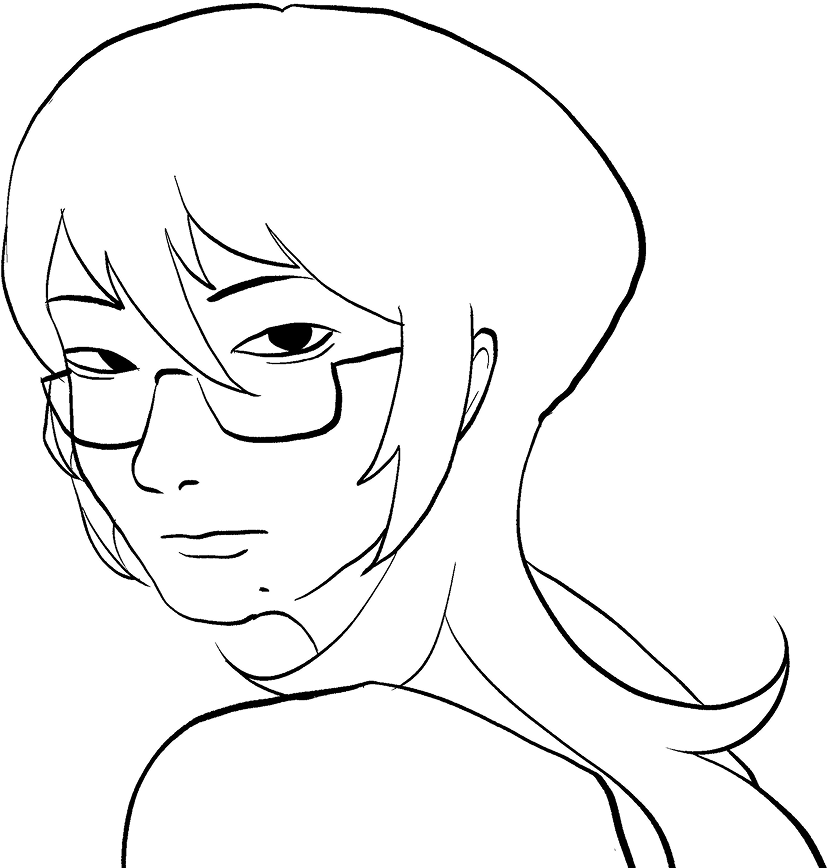

i am
alex he
graphic | web | fashion designer



I'm Alex, a graphic and fashion designer studying Global Business and Digital arts at the University of Waterloo. I design fascinating and fun creations for those with creative hearts and mind. With a deep understanding on a plethora of topics beyond the surface level, I draw on an automative style to create my finished projects. As I’m driven by a perpetual curiosity to adapt and learn more, I’ve continued to develop all sorts of skills; UX design, coding, illustration, graphic and fashion design, and above all, adaptability!